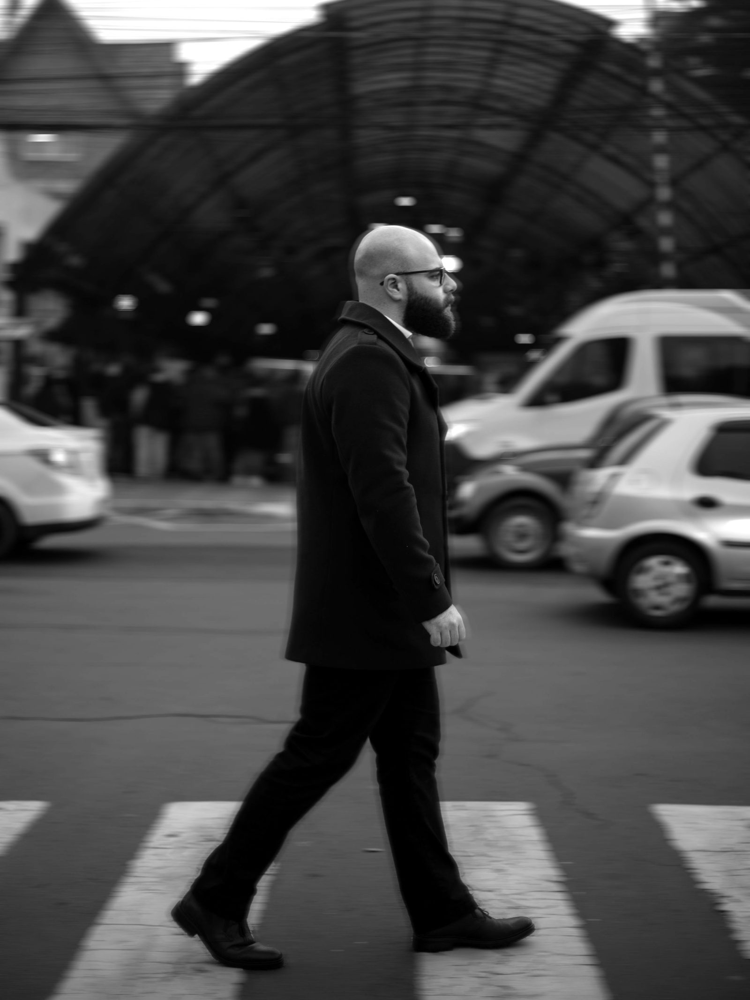

About Vertigo
Vertigo Color was born from a singular obsession with the cinematic image. When I first set out to elevate my own productions, the endless complexities of lighting, sound and camera gear felt overwhelming — but color grading immediately clicked. Encouraged by industry mentors like Filippo Cinotti, who proved that a dedicated career in color was possible, I went all-in and invested everything I had into mastering the craft.
The turning point came when I joined forces with a business partner who brought over a decade of post-production experience — and the name Vertigo Color with him. By combining obsessive dedication with deeply rooted technical expertise, we built a post-production house entirely around the art and science of the grade.
Today, Vertigo stands as one of the most sought-after color grading studios in Brazil — with a global focus. Operating from southern Brazil lets us offer North American and European markets a massive advantage: world-class finishing at a highly competitive rate, with zero compromise on rigor.

Infrastructure
Based in São Marcos, southern Brazil, with live remote sessions available worldwide. And when a project calls for presence in Rio de Janeiro, we work through our partnership with O2, using their infrastructure.
Av. Venâncio Aires, 907 — São Marcos, RS — Brasil
Brands that have been through our color
